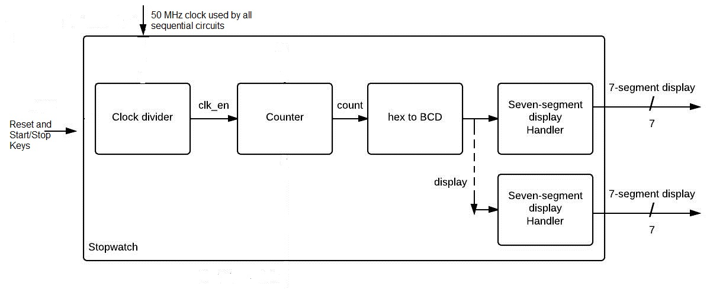
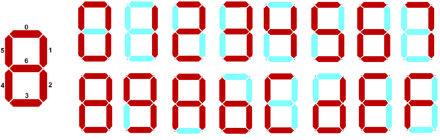
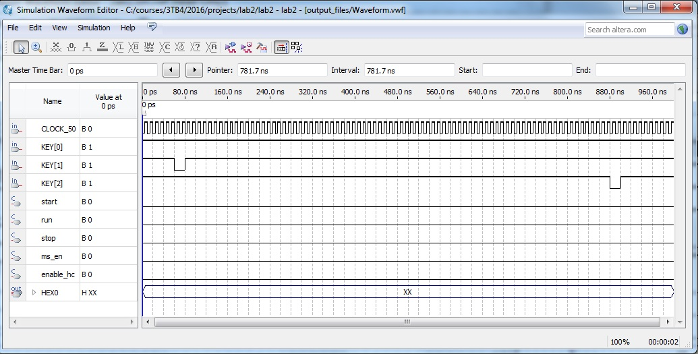
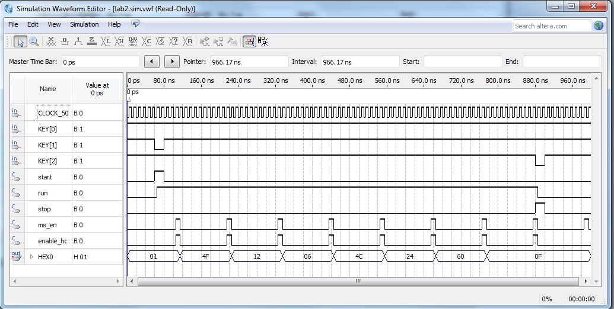
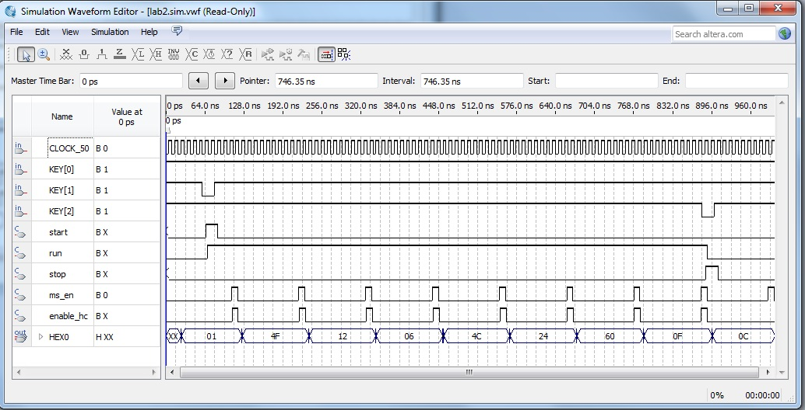

Mechtron 3TB4: Embedded Systems Design II
Lab 2
Building a Hardware Interface using an FPGA
Reports Due:
Prelab: At the start of your lab session.
Post-lab: At the start of your next tutorial session.
Goals:
- Introduction to Quartus II Software and how to use different facilities provided by it
- To learn how to describe simple circuitry in Verilog HDL
- To learn how to use an FPGA to implement a simple interface
Note: This lab consists of three activities. Marks allocated to each are indicated in square brackets. The following documents may help you with your lab. Please go over them at your own convenient time, in addition
to the class notes:
System DescriptionIn this lab you will create a circuit that implements
a stopwatch. The time will be displayed on the 7-segment displays on the DE2 board. To achieve this, you will design a clock divider, a counter,
a Hexidecimal to binary-coded decimal translator, a seven-segment display handler, and a top-level module interfacing the submodules You
will describe this interface in Verilog Hardware Description Language (HDL) and implement it on the FPGA on DE2 board. This lab requires knowledge
of basic Verilog.
The system we are building is shown in Figure 4. The system consists of a clock signal divider, a counter, a hex to BCD
converter, and several Seven-segment display handlers. This diagram is meant to be a guide only.

| Figure 1: System Block Diagram |
The clock divider slows down the 50 MHz oscillator crystal, and generates an output signal every millisecond. This signal enables the counting
for the counter. The current count from the counter module is fed into the hex-to-BCD converter. Once the count is translated to
a decimal value, it is fed into the seven-segment display handler to output the count on the seven-segment display on the DE2 board.
Clock DividerThe
clock divider is a special circuit that can limit the rate of an oscillator clock's signal. The DE2 board carries a 50 MHz clock
that you will be using. However, this is too fast for the application. In order to slow down the oscillator, you will use a
counter. When the count register reaches a certain value, the count register will reset to zero.
Details of 7-Segment Displays 7-segment
displays are some of the most ubiquitous display devices in use today. In their basic form, they are used to display decimal numbers.
Each display consists of 7 segments (hence the name). Each segment is an LED that can be turned on or off to display various patterns.
Each segment is controlled independently, although they work together to display a pattern. Segments are numbered from a to g or 0 to 6
as shown in Figure 2. The figure also shows how the 16 hexadecimal digits can be represented using a 7-segment display. Please note
that to make a segment on the DE2 board light up, logic 0 has to be applied to its input. For example, to display number 1 on a
7-segment display, one should apply logic 0 to segments 1 and 2, and logic 1 to all other segments.

| Figure 2: Seven-segment Display |
As you already know, all hexadecimal digits can be encoded using 4 bits. If we have a 4-bit number stored somewhere
in the system, and we wish to display it on a 7-segment display, we need a code converter circuit that will drive each of the 7 segments based
on the 4-bit value. Such a circuit has one 4-bit input, and 7 outputs, corresponding to segments 0 through 6, and is sometimes referred to as
a 7-segment decoder.
Activities
Pre-lab [30]
The following activities must be completed by each student independently and submitted as part 1 of the lab report (the prelab) at the start of your lab sessions. [Item 1 worth
9 marks other items 3 marks each]
- Submit your report related to the tutorial for lab2 as described in the relevent document.
- Write a truth table for the 7-segment decoder, which will provide the following functionality:
- The decoder has a 4-bit input and a 7-bit output.
- For the first 10 binary combinations of the input (0000 to 1001), the decoder should provide signals to display decimal digits 0 to 9 on the 7-segment display, as shown in Figure 3.
- For the remaining binary combinations (1010 to 1111), the decoder should produce signals to display first 6 letters of your first name. If your first name is shorter than 6 letters, add more letters from your last name. Keep in mind that you need to drive logic 0 to turn a segment on. As discussed in class, it may not be possible to display some letters in a meaningful way on the 7-segment display, you should use approximations if you require a letter that cannot be displayed on the 7-segment display easily.
You should, produce the complete truth table corresponding to the numbers and your name, as specified above.
- Using either K-maps or algebraic manipulation, derive logic expressions for segments 0 and 1 in the truth table you created in step 3. Note that the logic expressions need not be minimal.
- Create a top level module that takes the 50MH clock and three of the 4 keys of the DE2 board as input and outputs
signals to eight of the 7 digit displays of DE2 board. KEY[0] is used for the reset signal, KEY[1] for the "start" signal and KEY[2] as the "stop" signal. Also note
that pressing any of these keys results in a logic low signal and you may like to use an inverter if you want logic high signal when a key is pressed. Use top level file declaration:
module lab2 (input CLOCK_50,
input [2:0] KEY, output wire [6:0] HEX0, HEX1, HEX2, HEX3, HEX4, HEX5, HEX6, HEX7)
/* fill your code and instantiate other modules here */
endmodule
- Write Verilog code to implements a flip-flop that takes a "start" signal when KEY[1] is pressed and latches the output so that it
retains the signal even when the KEY[1] is released.
Use the following skeleton code for your module:
module control_ff (Clock, ff_in, Set, Clear, Q);
input Clock, ff_in,Set, Clear;
output reg Q;
- Write Verilog code that describes the clock divider circuit. Refer to the previous section for the clock divider.
Use the following skeleton code for your module:
module clock_divider (Clock, Reset, Pulse_ms);
input Clock, Reset;
output reg Pulse_ms;
/* fill in your code here */
endmodule
- Write verilog counter logic to reset the counter, to stop the counter without resetting the current value, and to resume the counting when paused.
module hex_counter(Clock, Reset, Enable, Stp, Q);
input Clock, Reset, Enable, Stp;
output [31:0] Q;
reg[31:0] Q;
/* Your code */
endmodule
- Describe a circuit that implements a hexidecimal to Binary-coded decimal converter in Verilog. Use the following skeleton code for your module:
module hex_to_bcd_converter(input wire clk, Reset, input wire [31:0] hex_number, output reg [3:0] bcd_digit_0,bcd_digit_1,bcd_digit_2,bcd_digit_3,bcd_digit_4,
bcd_digit_5, bcd_digit_6, bcd_digit_7) ;
/* fill in your code here */
endmodule
- Describe in Verilog a circuit that implements the truth table created by you in item 2 above for display of decimal digits only.
Use ``assign" statements to specify the functionality of segments 0 and 1, and behavioral description to specify functionality of other blocks. Use the following skeleton code for your module:
module seven_seg_decoder (input [3:0] x, output[6:0] hex_LEDs);
reg [6:2] top_5_segments;
assign hex_LEDs[0] = /* Insert expression for segment 0 here */;
assign hex_LEDs[1] = /* Insert expression for segment 1 here */;
assign hex_LEDs[6:2] = top_5_segments[6:2];
/* Use an always block to specify functionality
for the top 5 segments here */
endmodule
In the Lab [50]
You will have different solutions from your pre-lab (pre-labs should be completed individually). In the lab you need to demonstrate only one working program/circuit per group.
- Create a new Quartus project, as you learned in the “Quartus II Introduction Using Verilog Design" tutorial. Name this project "lab2". Use your code from pre-lab to
create a top-level module named lab2 that binds all components together.
Write code for all other modules based on your code from the pre-lab.
Import pin assignments
from the DE2_pin_assignments.csv file provided on course web page.
Before compiling, make sure that all unused pins are reserved as Inputs tri stated. This option is available under Assignments->Device->Device and Pin Options->Unused Pins.
Compile your design and debug your code if necessary.
- RTL Views: Use Net List Viewers to look at different RTL views of the circuit designed by you. Take screen shots and include them in your report.[10 marks]
- Pin Assignments: Use Assignments ->Pin Planner to confirm that pins have been correctly assigned. Take a screen shot and include it in your report.[10 marks]
- Simulation: The correct behaviour of a circuit can be checked using functional and timing simulations. However, a complete simulation of your circuit would require a large
number of clock cycles, making it difficult to
produce an informative display. You can perform a meaningful simulation by scaling down some of the parameters. For example, the clock divider circuit can be modified such that it gives out a pulse every ten cycles of the
input clock (instead of every milli second required by stop watch application that will give out a pulse every 50000 cycles). Example waveforms and output for both the functional as well as timing simulation are shown in figures below.
You are not required to produce diagrams that match those shown here and you can use your own design to produce figures similar to these. Take a screen shot of the figures used/produced by you. Do not forget to use "/*synthesis keep*/"
directive where necessary.[10 marks]

| Figure 3: Waveforms for simulation |

| Figure 4: Result of functional simulation |

| Figure 5: Result of timing simulation |
- Note the difference in the out puts for "KEY[1]" and "start" signals on functional and timing simulations.
Such differences do exist for other signals also but are not noticeable due to granularity of scale.
- Download your design to the FPGA and test the behaviour of your circuit and demonstrate its operation to one of the TAs.[20 marks]
Lab Report (Part 2)[20]
This part of the lab will test your presentation and report writing skills. Describe what you did in this lab, include the code used as well as screen shots taken and answer the following questions:
- In 2-3 sentences explain the role of the ``DE2_pin_assignments.csv" file that you imported into your design.
- Open the compilation report in Quartus, and report the following numbers:
- Total number of logic elements used by your circuit.
- Total number of registers.
- Total number of pins.
- The maximum number of logic elements that can fit on the FPGA you used.